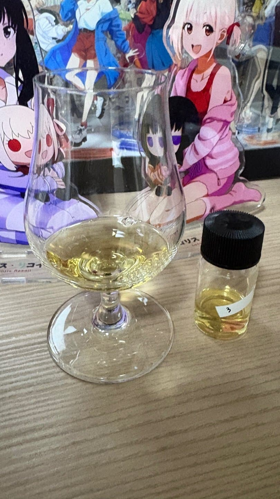

노즈
청사과 사이다향,야주 약간 건자두??,배
노즈가 시원시원하다. 저번에 2번 바이알에서 느꼈던 사이다 향이 비슷하게 나는데 청사과를 품은 사이다향이다. 잘못맡은건지 모르겠는데 건자두 향도 느껴지고, 글렌피딕 12년에서 날법한 배 향도 느껴진다.
팔래트
아주 달달함을 극강으로 농축시킨 청사과 주스, 풀맛, 나무
최근 1년 사이에 이정도로 사과향 뿜뿜인 위스키는 오드 25년 이후로 첨인듯
존나 맛있다.
피니쉬
시원한 나무향(순간 미즈나란줄),바닐라
하쿠슈 고숙 먹었을때 나오던 피니쉬가 확 나온다.
누가 말안했으면 미즈나라 느낌이라고 해도 믿을정도.
총평
보리대신 사과로 만든 위스키
이거 저번에 나눔 받았을때 글렌오드 시리즈 1,2번 두개 다 있다고 들었었다
이건 그 1번 아닐까 싶다. 왜냐 노즈에서 아무리 봐도 쌍둥이라고 소문 내고 있다.
댓글 1개